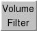

Volume Filter 
Volume Filter includes several options for smoothing or transforming
volume data.
See also:
Hide Dust,
vop,
mask
There are several ways to start
Volume Filter, a tool in the Volume Data category
(including from the
Volume Viewer
Tools menu).
Filter type:
- Gaussian - perform Gaussian filtering
- Width - width in physical units (such as Å) of the
3D isotropic Gaussian function
- Median 3x3x3 - smooth the data by setting each value to the
median of the 27 values in the enclosing 3x3x3 box of grid cells
(median filtering with different box sizes can be performed with
vop)
- Iterations - how many cycles of value reassignment to perform
- Bin - reduce data size by averaging the values in
NxNxN cells of the original data, where N is the Bin size
- Laplacian - perform Laplacian filtering
- Fourier Transform - apply Fourier transform
- Scale - change data values (not grid point locations) and/or types:
- Shift - add a constant to each value; can be negative
- Scale - multiply values by a factor
- Value type - cast values to int (8-, 16-, or 32-bit), uint
(8-, 16-, or 32-bit), or float (32- or 64-bit)
Pressing return (Enter) in the Shift or Scale value field is
equivalent to clicking Filter.
Shifting and scaling are applied in that order.
Shifting and scaling use 32-bit float to avoid truncation problems.
Clicking Filter
processes the current set of data
in Volume Viewer.
If the current set is the result of a previous application of the same type
of filtering, it will simply be updated to reflect the new settings (the
original data are re-filtered with the new settings).
Otherwise, a new volume data set will be created and made the current set.
The new data set can be
saved to a file with
Volume Viewer.
Clicking Options reveals additional settings
(clicking the close button  on the right
hides them again):
on the right
hides them again):
- Displayed subregion only
- whether to limit the procedure to the
current display region
(which could be a subregion of
the current set)
- Displayed subsampling only
- whether to use only the displayed subsample
(when step > 1)
instead of the full resolution of the current set
- Adjust threshold for constant volume - adjust the contour level on
the result to enclose the same volume as the contour surface on the current set
- Immediate update - update the result as soon as
a slider parameter (Gaussian width or median iterations) is changed;
only applies when the current set
is the result of a previous application of the same type of filtering
Close dismisses the Volume Filter dialog; Help
opens this manual page in a browser window.
TECHNICAL NOTES
Gaussian filtering.
Convoluting the data with a Gaussian function
improves the ratio of signal to noise but reduces resolution.
It is fastest for data sizes that are powers of 2, and can be very slow
when insufficient memory is available. It uses temporary memory
four times the size of the input data (if in 32-bit floating point values)
and produces a 32-bit floating point result. It may be helpful to limit
the input to just a subsample or subregion of the original data.
Laplacian filtering.
The Laplacian operation is a sum of second derivatives.
Laplacian filtering is useful for edge detection but
amplifies noise, so it may be necessary to perform smoothing such as
Gaussian filtering beforehand.
Finite differences v(i-1)-2*v(i)+v(i+1) along each axis are used,
and voxels at the edge of the box are set to zero.
Fourier transform.
Only the magnitudes of the complex Fourier components are included in the
new data set; the phases are discarded and the constant component is set to
zero. The box containing the Fourier transform
(with axes in units of reciprocal space) is centered on the original data
and scaled to have the same total volume.
Some properties of the original data are evident from the Fourier transform.
High-frequency components are near the edges of the box,
low-freqency components near the center.
Volume data is typically oversampled (voxel size two to three times smaller
than the actual data resolution) and this causes the Fourier transform
to have nonzero values only in the middle half or third of its bounding box.
The missing wedge in electron microscope tomograms can also be seen.
Spikes radiating along the principal axes in the Fourier transform are
caused by nonperiodicity of the original data.
UCSF Computer Graphics Laboratory / August 2009